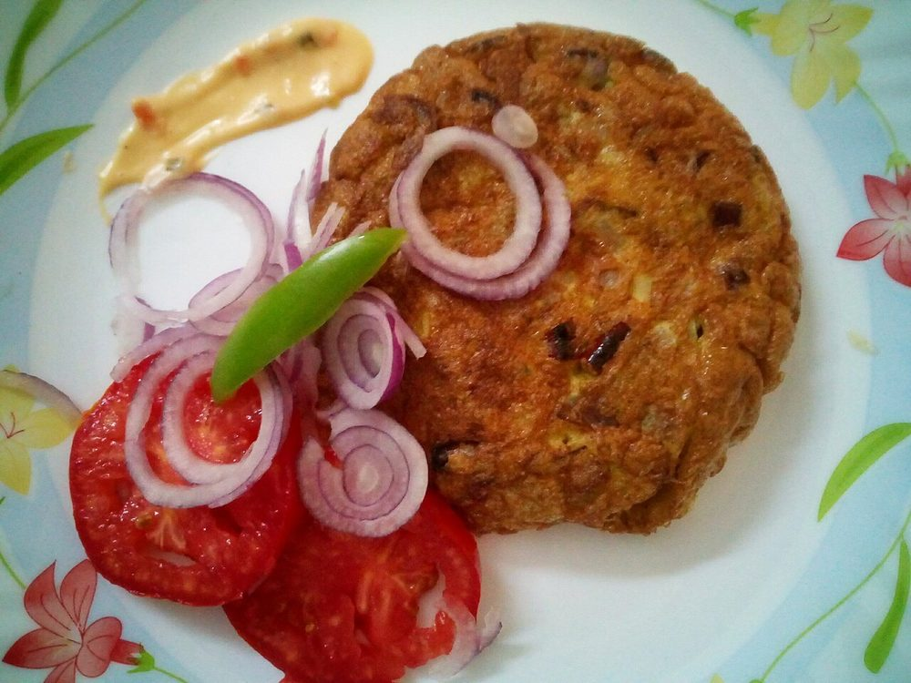

Contains: egg
Checked against the ingredient list for ten allergens: milk, egg, fish, crustaceans, tree nuts, peanuts, sesame, mustard, soy and gluten. Brands vary, so read the label on anything new to you.
Ingredients
Quantities for 4.
- 6, hard boiled and peeled Eggs
- 4 large, sliced very thin Onionthe volume looks absurd and then it collapses
- 2, chopped Tomato
- 1 tbsp, chopped fine Ginger
- 6 cloves, chopped fine Garlic
- 2, slit Green Chillioptional
- 1.5 tsp Chilli Powder
- 1 tsp Kashmiri Chillifor colouroptional
- 1.5 tbsp Coriander Powder
- 1/2 tsp Turmeric
- 1/2 tsp Garam Masala
- 1/2 tsp Fennel Powderoptional
- 1/2 tsp Black Pepper
- 3 sprigs Curry Leaves
- 3 tbsp Coconut Oil
- to taste Salt
Cookware
stovetop, kadhai
Before you start
- Boil the eggs 9 minutes from a rolling boil, then cool them in cold water before peeling. The yolks stay just set and the shells slip off.
- Slice the onions as thin as you can manage. Thin slices melt into the masala; thick ones stay as visible strands.
- Score each peeled egg with 3 shallow slits so the masala gets inside rather than sliding off.
Method
- Heat 2 tbsp coconut oil in a kadhai and fry the scored eggs with a pinch of turmeric and salt for 2 minutes, turning, until blistered and gold. Lift out.Keep a lid handy. Eggs spit in hot oil.
- Add the remaining oil, then the sliced onions, ginger, garlic, green chillies and 2 sprigs of curry leaves with a pinch of salt.
- Cook on medium-low for 20-25 minutes, stirring every few minutes, until the onions collapse to about a fifth of their volume and turn a deep glossy brown.This is the entire dish and there is no shortcut. Twenty-five minutes, low and slow.
- Add the chilli powder, Kashmiri chilli, coriander powder, turmeric and pepper. Fry 90 seconds with a splash of water so the spices do not catch.
- Stir in the tomatoes and cook 8 minutes until they break down completely and the oil pools at the edges.Wait for the oil to separate. That is the signal the masala is cooked, not merely hot.
- Add 1/4 cup water, the garam masala and fennel powder, and simmer 3 minutes into a thick clinging masala.
- Return the fried eggs, roll them in the masala and cook 3 minutes on low so they take on the colour.
- Scatter over the last sprig of curry leaves, cover and rest 5 minutes off the heat before serving with appam or bread.
Safe temperatures: Egg dishes are done at 71°C / 160°F; a whole egg when the yolk and white are both firm. Reheat leftovers to 74°C / 165°F. FoodSafety.gov
Storage
Keeps 3 days refrigerated; the masala improves but the whites toughen a little. Reheat over low heat with 2 tbsp water, turning the eggs gently.
Nutrition Good estimate
Medium protein: 12 g a serving, 16% of the calories
| Per serving305 g | Per 100 g | |
|---|---|---|
| Calories | 283 kcal | 93 kcal |
| Protein | 11.6 g | 4 g |
| Carbohydrate | 22.2 g | 7 g |
| of which sugars | 8.6 g | 3 g |
| Fibre | 5.3 g | 2 g |
| Fat | 17.4 g | 6 g |
| of which saturated | 10.6 g | 4 g |
| of which unsaturated | 5.2 g | 2 g |
Nearest database match used for curry leaves, garam masala. Estimated from raw ingredients using USDA FoodData Central.
Times, yields, allergens and nutrition are guidance. Use your own judgement on doneness and on storing. More in About.